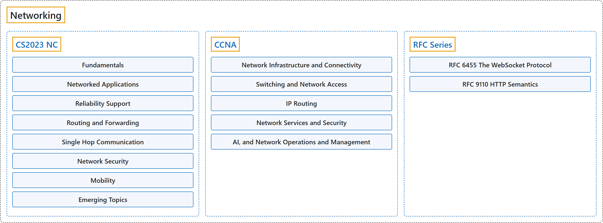

Networking
Classification

Glossary
| Term | Definition | 中文翻译 | Source |
|---|---|---|---|
| Networking 网络 |
"Networking and communication play a central role in interconnected computer systems that are transforming the daily lives of billions of people." | 网络与通信发挥着核心作用，体现在互联的计算机系统中，这些系统正在改变数十亿人的日常生活。 | Joint Task Force on Computing Curricula, 2024, NC "Preamble" section, para. 1 |
| CS2023 NC CS2023 NC |
"This knowledge area deals with key concepts in networking and communication, as well as their representative instantiations in the internet and other computer networks." | 这个知识领域涉及网络与通信的关键概念，以及它们的代表性实现，即在互联网和其他计算机网络中的实现。 | Joint Task Force on Computing Curricula, 2024, NC "Preamble" section, para. 2 |
| CCNA CCNA |
"CCNA validates a broad range of fundamentals for all IT careers - from networking technologies, to security, to software development - proving you have the skills businesses need to meet market demands." | CCNA 验证广泛的基础知识，适用于所有 IT 职业，从网络技术、安全到软件开发，证明你具备企业所需的技能，能满足市场需求。 | Cisco, n.d.-b, "CCNA" page, para. 2 |
| RFC Series RFC 系列 |
"RFCs outline computer networking and Internet foundations, including Internet Standards and historical or informative content." | RFC 阐述计算机网络和互联网的基础，包括互联网标准以及历史性或参考性内容。 | RFC Editor, n.d., home page, para. 1 |
References
Cisco. (n.d.-a). 200-301 CCNA exam topics and study guide (Version 2.0). Cisco Learning Network. Retrieved October 25, 2026, from https://learningnetwork.cisco.com/s/ccna-v2-exam-topics
Cisco. (n.d.-b). CCNA. Retrieved October 24, 2026, from https://www.cisco.com/site/us/en/learn/training-certifications/certifications/enterprise/ccna/index.html
Fette, I., & Melnikov, A. (2011). The WebSocket protocol (RFC 6455). RFC Editor. https://doi.org/10.17487/RFC6455
Fielding, R., Nottingham, M., & Reschke, J. (Eds.). (2022). HTTP semantics (RFC 9110). RFC Editor. https://doi.org/10.17487/RFC9110
Joint Task Force on Computing Curricula. (2024). Computer science curricula 2023. Association for Computing Machinery. https://doi.org/10.1145/3664191
RFC Editor. (n.d.). The RFC Series. Retrieved October 25, 2026, from https://www.rfc-editor.org/